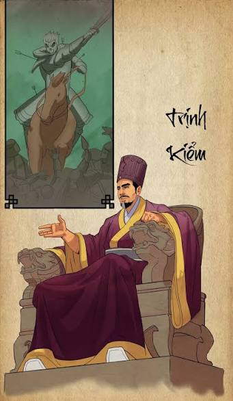

Trịnh Kiểm (chữ Hán: 鄭檢, 14 tháng 9, 1503 - 24 tháng 3, 1570), tên thụy Thế Tổ Minh Khang Thái vương (世祖明康太王), là nhà chính trị, quân sự có ảnh hưởng của Đại Việt thời Nam - Bắc triều. Trên danh nghĩa tôn phò các vua Lê trung hưng, ông là nhà lãnh đạo trên thực tế của phe Nam triều từ năm 1545 tới khi qua đời. Dù tước hiệu cao nhất của ông khi còn sống là Thái quốc công, ông được đời sau truy tôn làm Thế Tổ Minh Khang Thái Vương và thường được xem là vị chúa đầu tiên của gia tộc họ Trịnh.
Trịnh Kiểm xuất thân trong một gia đình có hoàn cảnh khó khăn tại Thanh Hoa (tên cũ, nay là Biện Thượng, Thanh Hóa) nhưng được ghi nhận có chí quả cảm, giỏi thu phục nhân tài. Lớn lên gặp cảnh họ Mạc đoạt ngôi nhà Lê, ông theo Thái sư Hưng quốc công Nguyễn Kim nổi quân chống nhà Mạc, dựng Lê Trang Tông làm Hoàng đế ở Ai Lao. Nguyễn Kim thấy ông có sức khỏe và tài lược khác thường, nên gả con gái là Nguyễn Thị Ngọc Bảo, cho coi binh mã và cất nhắc đến tước Dực Nghĩa hầu. Trịnh Kiểm lập nhiều chiến công trong các trận đánh quân Mạc. Vua Lê Trang Tông cũng coi là người tâm phúc, năm 1539 phong ông lên chức Đại tướng quân, tước Dực quận công. Lúc đó ông 37 tuổi.
Sau khi bố vợ Nguyễn Kim qua đời năm 1545, Trịnh Kiểm đã lên thay lãnh đạo chính quyền và quân đội của triều Lê trong gần 30 năm, trải qua 3 đời vua Lê Trang Tông, Lê Trung Tông và Lê Anh Tông. Ông là người đóng vai trò lớn trong việc tổ chức nhà nước của Nam triều, qua những quyết định như dựng hành dinh tại ở Vạn Lại, tổ chức một số khoa thi Nho học, xây dựng quân đội, chiêu mộ nhân tài hào kiệt, đẩy lùi các cuộc tấn công của nhà Mạc vào Thanh Hoa - Nghệ An, chinh phục Thuận - Quảng từ tay nhà Mạc và mở nhiều chiến dịch lớn đánh lên phía Bắc. Dù chưa đạt được thắng lợi hoàn toàn, Trịnh Kiểm đã đặt nền móng cho các hậu duệ của mình hoàn thành sự nghiệp trung hưng Nhà Lê, khôi phục Đông Kinh, mở ra triều đại lâu dài của các vua Lê - chúa Trịnh trong lịch sử trung đại Việt Nam.
Các sách chính sử như Đại Việt sử ký toàn thư, Đại Việt thông sử không chép rõ về nguồn gốc của Trịnh Kiểm. Thời điểm Trịnh Kiểm xuất hiện trong sử là năm 1539, khi Nguyễn Kim phong cho ông làm Đại tướng quân, tước Dực quận công. Theo sách Lịch triều hiến chương loại chí, Trịnh Kiểm người ở làng Sóc Sơn, huyện Vĩnh Lộc, xứ Thanh Hoa, thuở hàn vi nghèo túng, thường phải đi ăn trộm để nuôi mẹ. Lớn lên có sức khỏe hơn người, đi theo Nguyễn Kim. Nguyễn Kim cho là người khác thường, đem gả con gái cho. Theo các quyển gia phả họ Trịnh còn lưu lại, tổ tiên của Trịnh Kiểm là Trịnh Xứng sinh cao tổ là Trịnh Kỷ, tằng tổ là Trịnh Liễu. Ông Trịnh Liễu mất cha mẹ từ bé, nhà nghèo phải cày cấy để kiếm sống, sau lấy vợ và dời về làng Biện Thượng, làm điều thiện không mỏi, nhân hậu có thừa. Trịnh Liễu cùng anh em về dựng nhà ở Biện Thượng (hay Bồng Thượng). Sau đó, Trịnh Liễu đi thi đỗ tam trường. Con trai Trịnh Liễu là Trịnh Lan cũng lấy vợ họ Hoàng, người xã Biện Thượng. Con thứ của Trịnh Lan là Trịnh Lâu cũng lại lấy vợ họ Hoàng, tức là bà Hoàng Thị Ngọc Dốc ở thôn Hổ, xã Vệ Quốc, huyện Yên Định. Bà Ngọc Dốc chính là mẹ đẻ của Trịnh Kiểm.
Trụ cột Nam TriềuNăm 1546, Trịnh Kiểm rút binh về Thanh Hóa, lập hành điện cho vua Lê Trang Tông ở sách Vạn Lại, rồi chiêu mộ anh hùng hào kiệt, huấn luyện quân sĩ, tích trữ lương thảo tính kế đánh họ Mạc. Nước Đại Việt lúc này chia làm hai, từ Thanh Hóa trở vào nam thuộc Nhà Lê do Thái sư Trịnh Kiểm thống lĩnh; từ Sơn Nam trở ra thuộc về họ Mạc, tức Bắc triều. Mỗi khi có việc đánh dẹp, đều do Trịnh Kiểm thống lĩnh, đánh đâu được đấy. Do vậy, các hào kiệt đất Hoan, Diễn (Nghệ An), Ô (Thừa Thiên, Huế), Quảng (Quảng Nam, Đà Nẵng) đua nhau tới theo, điển hình như Trạng Bùng Phùng Khắc Khoan và Lương Hữu Khánh, Đinh Bạt Tụy, Nguyễn Khải Khang, Nguyễn Thiến, Lê Khắc Thận... Đất Ái Châu (Thanh Hóa) yên dần. Thời vua Lê Thái Tổ, chia cả nước làm 5 đạo: Đông đạo, Nam đạo, Tây đạo, Bắc đạo và Hải Tây đạo. Đến đời vua Lê Thánh Tông, mới chia cả nước thành 13 đạo thừa tuyên. Khi Mạc Đăng Dung chiếm ngôi Nhà Lê, cả nước thuộc về họ Mạc, chỉ trừ 11 doanh thuộc Tuyên Quang do Vũ Văn Mật chiếm cứ, đến khi Nguyễn Kim khởi binh, chiếm được đất Ái châu (Thanh Hóa), rồi lần lượt chiếm các đất phía Nam, châu Hoan, Diễn, Ô Lý (Nghệ An, Thuận Hóa). Lúc ấy nước Việt chia làm hai, do hai vương triều Mạc và Lê trung hưng nắm giữ. Đất Tuyên Quang do Vũ Văn Mật đứng đầu quy phụ theo phe nhà Lê - Trịnh.
Năm 1556, vua Trung Tông mất không có con nối. Lúc bấy giờ dòng chính nhà Lê đã đứt đoạn, con cháu dòng dõi nhà Lê mới hỏi ý kiến các quan đại thần. Các quan có người còn đề nghị tìm người bên ngoại nhà vua mà đưa lên ngôi, nhưng cũng có ý kiến cho rằng ngôi vị thiên tử đó phải giành cho con cháu nội tộc dòng họ Lê. Trịnh Kiểm liền sai người tìm con cháu họ Lê, tìm được cháu 4 đời của ông Lê Trừ (anh trai vua Lê Thái Tổ) là Lê Duy Bang đang ngụ tại làng Bố Vệ huyện Đông Sơn, bèn rước về tôn lên ngôi, tức là Lê Anh Tông. Lúc Trịnh Kiểm nắm quyền, triều Lê trung hưng chỉ mở hai khoa thi Nho học vào năm 1554 và 1565. Về ngạch binh, Trịnh Kiểm đặt ngạch quân theo quy chế cũ, đặt Đô đốc 5 phủ, lại đặt quân dinh năm khuông, dinh chia ra cơ đội thứ bậc khác nhau, chỉ lấy quân ở hai xứ Thanh Hóa và Nghệ An.
Năm 1554, Trịnh Kiểm dời hành dinh của vua Lê đến Biện Thượng, lại cho rằng lúc này sĩ khí đang lên, bèn sai các tướng xuất quân bình định đất Hóa châu ở phía Nam. Đất Hóa châu do tướng Mạc là Viên Đàm bá Hoàng Bôi chiếm giữ, quân Nam triều giết Hoàng Bôi, bình định đất Hóa châu, tức hai xứ Thuận, Quảng. Thái sư Trịnh Kiểm thu thập các hào mục và sinh viên trong xứ, bổ nhiệm các chức vụ, khiến cho xứ này được yên. Tháng 10 năm 1558, Trịnh Kiểm dâng biểu tấu vua Anh Tông về chiến lược đánh trận, theo đó ông muốn yên một mặt để dốc sức chống lại nhà Mạc. Hoàng đế y theo, cho Nguyễn Hoàng vào trấn thủ Thuận Hóa, sắc cho mọi việc được chuyên trách, chỉ hàng năm phải cống thuế; từ đó Hoàng cùng Trấn quận công Bùi Tá Hán - Trấn thủ Quảng Nam giữ phận sự phòng bị mặt đông nam cho vùng đất căn bản Thanh Nghệ. Tháng 3 năm 1568, Bùi Tá Hán chết, Trịnh Kiểm chọn Nguyên quận công Nguyễn Bá Quýnh (người Nghệ An) làm tổng binh coi giữ đất ấy. Năm 1569, vua Lê Anh Tông gia phong cho Trịnh Kiểm làm Thượng tướng Thái Quốc Công và tôn là Thượng phụ. Đến đây quyền lực của ông bao trùm triều đình. Trịnh Kiểm tuy chưa lấy lại Đông Kinh nhưng công lao trung hưng là có đóng góp rất lớn của ông. Nhà Lê nhờ Trịnh Kiểm mới trung hưng được, mà họ Trịnh lập lên nghiệp Chúa cũng là khởi đầu tự Trịnh Kiểm vậy.
Qua đờiTrịnh Kiểm qua đời ngày 18 tháng 2 năm Canh Ngọ, tức ngày 24 tháng 3 năm 1570 niên hiệu Chính trị thứ 13, hưởng thọ 68 tuổi, nắm quyền 25 năm trải 3 đời vua Lê Trang Tông, Lê Trung Tông và Lê Anh Tông. Trước đó khi bệnh tình trở nặng, ông đã dâng biểu xin thôi giữ binh quyền, lời lẽ rất khẩn thiết. Vua Lê bèn cho con trưởng của Trịnh Kiểm là Trịnh Cối, đã 35 tuổi lên thay đốc lĩnh các quân. Đến khi ông mất, Trịnh Cối được phong làm Đạt quốc công nắm binh quyền.
Trịnh Kiểm được truy tôn miếu hiệu là Thế Tổ (世祖), thụy hiệu: Minh Khang Nhân Trí Vũ chinh hung lược Hiển đức phong công Khải nghiệp hoành mô Tế thế trạch dân Kiến ưu khuông bích Triệu tường dụ quốc Quảng vạn hoằng mô Dụ hậu diễn phúc Tĩnh bích tá mạn Thùy hưu đốc bật Khai quốc cương nghị Phụ quốc tán trị Nghi uy triệu vũ Diên khánh vĩnh tự Kinh văn tuy lộc Cảnh quang phi hiếu Dương võ phù tộ Hưng nghiệp thùy thống Hồng sư nguyên tự Đốc dự riễu tự Yến mưu Hồng nghiệp Khoát Đạt Khoan dung Lập cực Vĩnh điển Tuy phúc Trí Đức Quảng Huệ Phù vận Tư trị Hồng Ân Tích hậu Vĩnh đức Đại công thịnh nghiệp Chế trị phục viễn Lập kinh trần kỷ Cương minh hung đoán Trương thiện triệu uy Trấn quốc an cương Quan minh tấn triết Cung ý quả quyết Sáng pháp Khai cờ Cảnh thái Vĩnh quang Hàm trương Tái vật Mậu công hoành hiến Pháp thiên hưng vận Quách hoành Khôi cương Tề thánh thông minh Vũ anh quả tịch Trương nghĩa bình tàn Thánh nhân duệ trí Cương kiên trung chính Anh hùng hào kiệt Kiến nghĩa tạo mưu Khai tiên Xương hậu Thái thủy Phu tiên Sùng cơ triệu khánh Thần vũ thánh văn Hùng tài vĩ lược Lập nghiệp phối thiên Cao công đức hậu Triệu mưu Khải vận Sáng nghiệp Lập bản Thái Vương,[Ghi chú 24] gọi tắt là Minh Khang Thái Vương (明康太王), tổng cộng 232 chữ hiệu là Trung Huân (忠勳), an táng theo nghi lễ đối với Chu công Đán.
Trịnh Cối lên thay Trịnh Kiểm không được bao lâu thì để mất lòng các tướng sĩ. Người em thứ là Trịnh Tùng nhân đó cướp lấy binh quyền của anh, tiếp tục cơ nghiệp phò Lê. Chính Trịnh Tùng sau này tiêu diệt họ Mạc, đưa vua Lê về Thăng Long, hoàn tất công cuộc trung hưng và mở ra giai đoạn vua Lê - chúa Trịnh.
Chúa Trịnh

Tranh vẽ Trịnh Kiểm
Minh Khang Thái Vương Trịnh Kiểm
1545 - 24 tháng 3, 1570
Sáng lập
Trịnh Cối Trịnh Tùng
Thông tin chung
14 tháng 9, 1503 Thôn Hổ, xã Vệ Quốc, huyện Yên Định, xứ Thanh Hoa
24 tháng 3, 1570 (66 tuổi) Thanh Hoa
Đại Việt (Việt Nam)
Kinh
Làng Biện Thượng, nay thuộc xã Biện Thượng, tỉnh Thanh Hóa
Trịnh Kiểm (鄭檢) hay Trịnh Phiến (鄭𭪤)
Trung Huân (忠勳)
Minh Khang Thái Vương (明康太王)
Minh Khang Nhân Trí Vũ chinh hung lược Hiển đức phong công Khải nghiệp hoành mô Tế thế trạch dân Kiến ưu khuông bích Triệu tường dụ quốc Quảng vạn hoằng mô Dụ hậu diễn phúc Tĩnh bích tá mạn Thùy hưu đốc bật Khai quốc cương nghị Phụ quốc tán trị Nghi uy triệu vũ Diên khánh vĩnh tự Kinh văn tuy lộc Cảnh quang phi hiếu Dương võ phù tộ Hưng nghiệp thùy thống Hồng sư nguyên tự Đốc dự riễu tự Yến mưu hồng nghiệp Khoát dại khoan dung Lập cực vĩnh điển Tuy phúc trí đức Quảng huệ phù vận Tư trị hồng ơn Tích hậu vĩnh đức Đại công thịnh nghiệp Chế trị phục viễn Lập kinh trần kỷ Cương minh hung đoán Trương thiện triệu uy Trấn quốc an cương Quan minh tấn triết Cung ý quả quyết Sáng pháp khai cờ Cảnh thái vĩnh quang Hàm trương tái vật Mậu công hoành hiến Pháp thiên hưng vận Quách hoành khôi cương Tề thánh thông minh Vũ anh quả tịch Trương nghĩa bình tàn Thánh nhân duệ trí Cương kiên trung chính Anh hùng hào kiệt Kiến nghĩa tạo mưu Khai tiên xương hậu Thái thủy phu tiên Sùng cơ triệu khánh Thần vũ thánh văn Hùng tài vĩ lược Lập nghiệp phối thiên Cao công đức hậu Triệu mưu khải vận Sáng nghiệp lập bản Thái Vương
Thế Tổ (世祖)
Chúa Trịnh
Trịnh Lâu
Hoàng Thị Ngọc Dốc